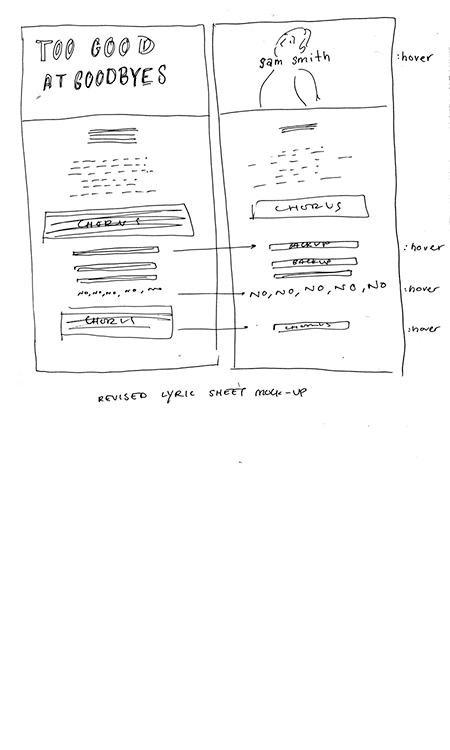

Revisions:
Originally I wasn't thinking about having the elements of the lyric sheet be that interactive because the song is pretty mellow. But I think because of the way the rhythm changes throughout, it would be nice to have the lyrics kind of expand and contract as you scroll through them.
